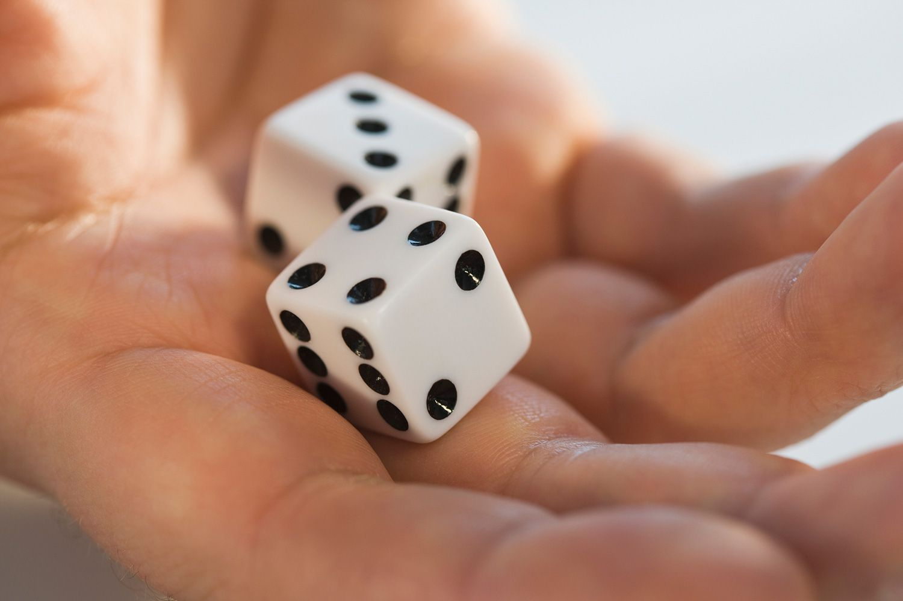

What is Randomness?
Randomness is like a box of chocolates. You never know what you're gonna get. But unlike chocolates, randomness is a fundamental concept in probability theory and statistics, and is used in many fields such as cryptography, computer science, and gaming. A random event is one that cannot be predicted beforehand with certainty. Unless you're a psychic, in which case, can you tell us the winning lottery numbers?
Generating Random Numbers in Python
Python provides several modules for generating random numbers. One of the most commonly used modules is the "random" module, which uses a pseudo-random number generator (PRNG) to produce random numbers. And just like a magician pulls a rabbit out of a hat, Python pulls a random number out of its hat. Abracadabra!
import random
# Generate a random integer between 0 and 10
random_number = random.randint(0, 10)
# Print the random number
print(random_number)
Simulating Falling Balls from a Height
Now let's apply the concept of randomness to a simulation of falling balls from a height. It's like a game of Plinko, but with more math. We will generate a random height for each ball, and calculate the time it takes for the ball to hit the ground using the formula:
t = sqrt(2*h/g)
Now, let's apply the concept of 2D equations of motion and acceleration due to gravity in a fun way. Try to score as many points as possible by throwing the basketball into the hoop. The trajectory of the basketball is determined by the initial velocity and the angle at which it is thrown, taking into account the acceleration due to gravity.